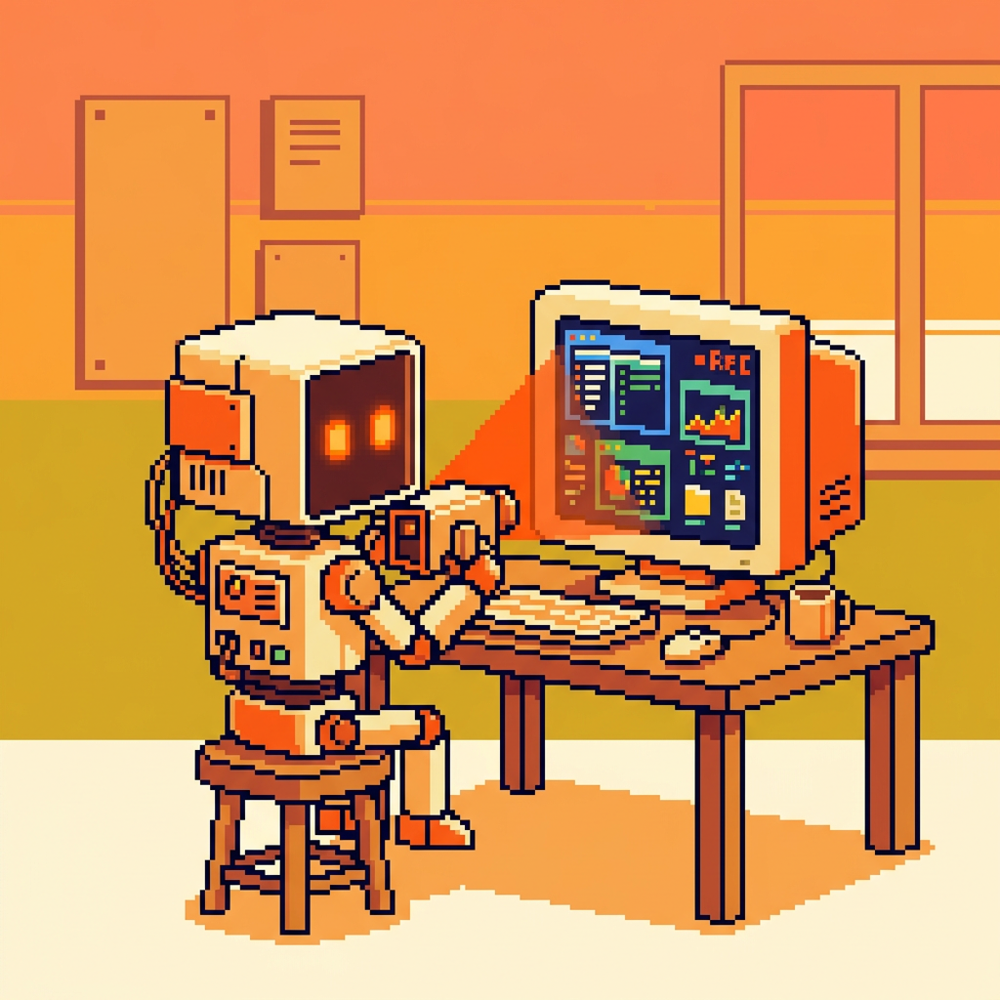
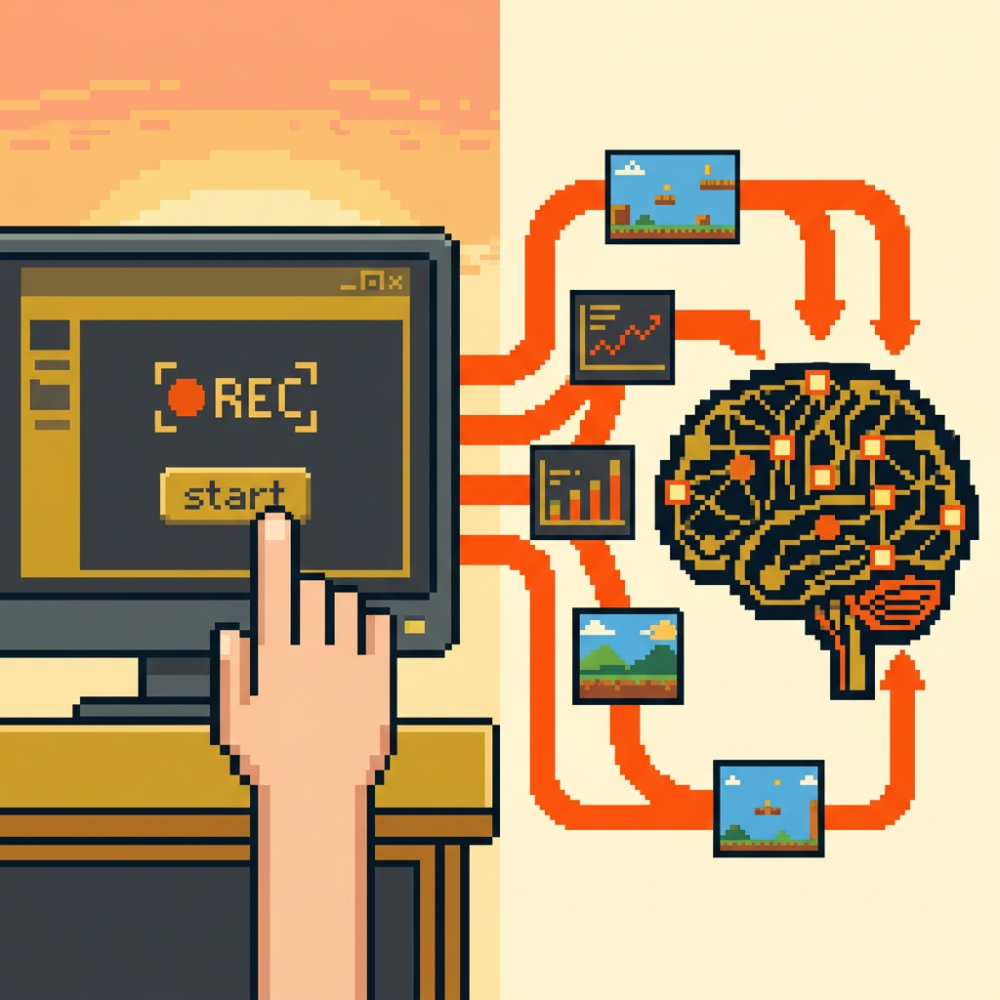
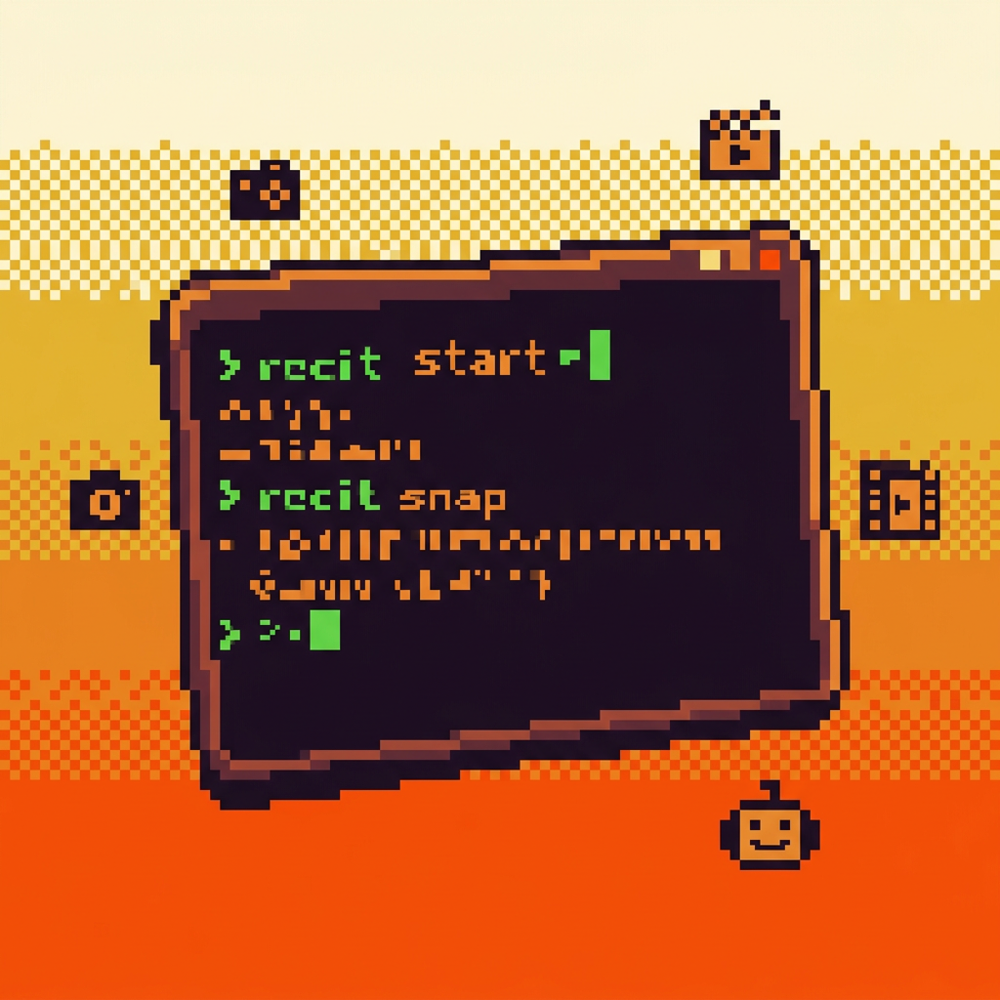

The free, open-source screen recording CLI for AI agents. Claude Code, Codex, Cursor, Z Code — they all see what you see. Zero cost. 100% local.
Video recording, screenshots, frame extraction, event logging — all through a simple CLI that any AI agent can call.
Record full screen, specific windows, or regions. ffmpeg-powered, cross-platform. Default 15fps, configurable up to 60fps.
Free foreverCapture the current screen in a single command. Outputs PNG with metadata. JSON mode for structured agent consumption.
Free forever5 tools exposed via Model Context Protocol. Works with Claude Code, Cursor, Codex, Windsurf, Cline — any MCP client.
stdio — no serverExtract key frames from recordings using scene detection. Token-aware output for vision model budgets.
Free foreverLog mouse clicks, keystrokes, window switches synced to video clock. JSONL format. Perfect for agent replay.
Free foreverVisual comparison output for agent reasoning. Essential for UI testing loops — "what changed after my code edit?"
Free foreverYour AI agent spawns recit as a local process. No cloud, no hosting, no server. Communication over stdin/stdout. That's it.

Your agents can now watch what you watch. Record a bug, capture a workflow, document a process — the agent sees it and acts on it. No manual screenshots needed.

No cloud APIs. No paid services. No hosting. ffmpeg handles recording. MCP handles agent integration. stdio means it runs on the user's own machine.

recit is a Unix citizen. JSON output for agents. Human-readable stderr for you. Works in Docker, CI/CD, SSH sessions, and your local terminal.
Three steps. Zero configuration. No accounts.
One command adds recit to your agent's toolkit. No download, no setup, no API keys.
Tell your agent to record. It calls recit via MCP. ffmpeg captures your screen locally.
The agent reads the video, extracts frames, understands what happened, and takes action.
Because recit uses the standard Model Context Protocol, it works with every agent that supports MCP. No custom integrations needed.
| Agent | Setup | Status |
|---|---|---|
| Claude Code | claude mcp add recit -- npx -y @codedbytahir/recit |
Native |
| OpenAI Codex | Shell tool → npx -y @codedbytahir/recit |
Works |
| Cursor | .cursor/mcp.json config |
Native |
| Z Code | MCP config or shell |
Works |
| Windsurf | Cascade MCP config |
Native |
| Any MCP Client | Standard MCP protocol |
Universal |
No npm install needed. npx downloads and runs recit on demand. You just need Node.js 18+ and ffmpeg (both free).
Built with ffmpeg + TypeScript + MCP. Published to npm. Source on GitHub. Your data never leaves your machine.